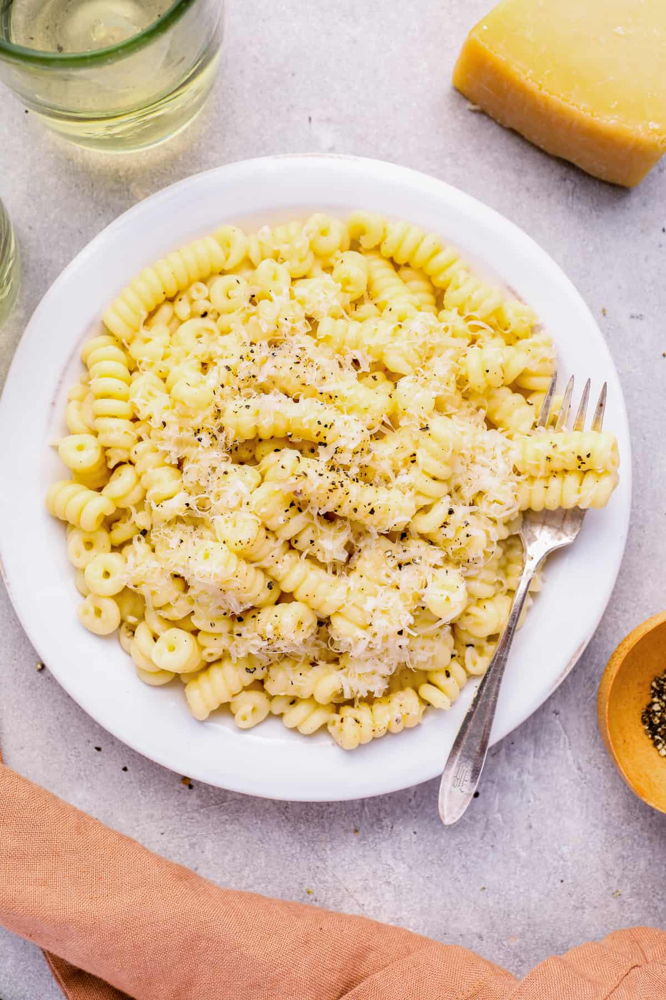

Cacio e Pepe

Description
An easy to make and delicious cacio e pepe recipe
Ingredients
- 8 ounces dry fusilli pasta
- 3 tablespoons unsalted butter
- 1 teaspoon coarsely ground black pepper
- 3/4 cup grated Parmesan cheese
- 1/2 cup grated Pecorino Romano cheese
Steps
- Bring a large pot of lightly salted water to a boil. Cook pasta until "al dente".
- Drain the pasta keeping 1/2 cup of cooking water and set aside.
- In a large sauté pan, melt the butter over medium heat. Add in the pepper and cook until fragrant and toasted, about 1 minute.
- Add the pasta water and bring to a boil. Add in the pasta and toss to coat.
- Turn the heat down to low and add in the cheeses. Toss the pasta continually until the cheese is melted.
- Serve topped generously with more cheese and pepper, if desired.